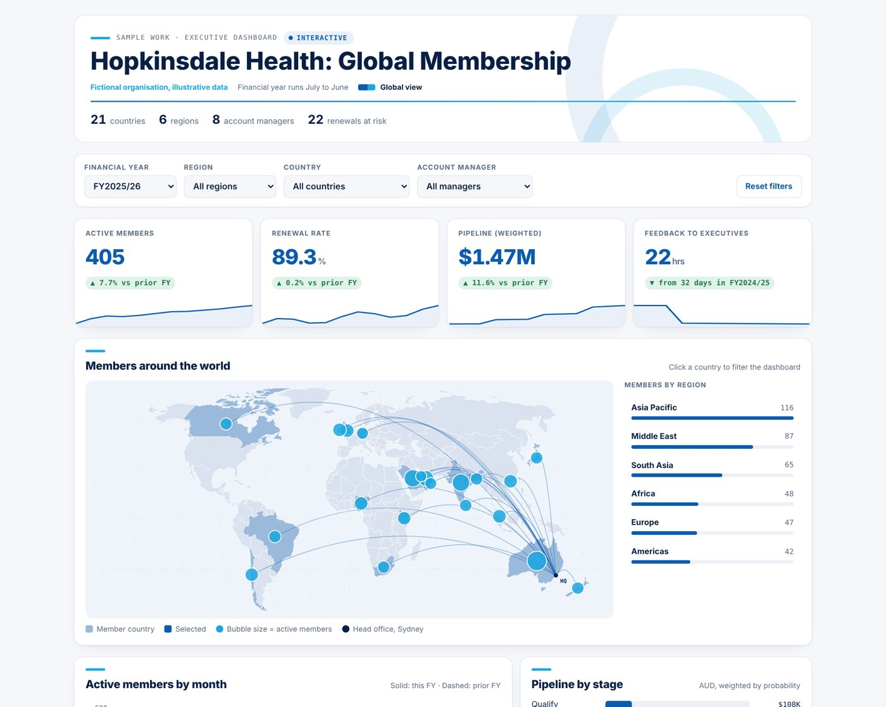
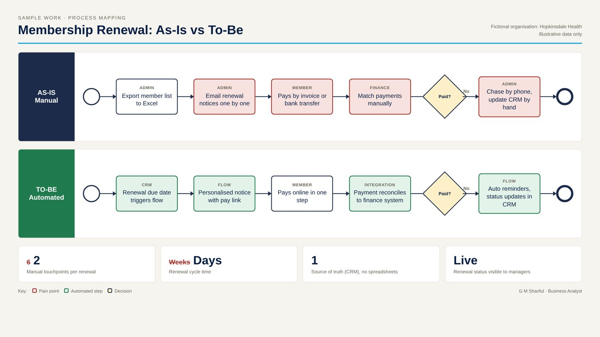
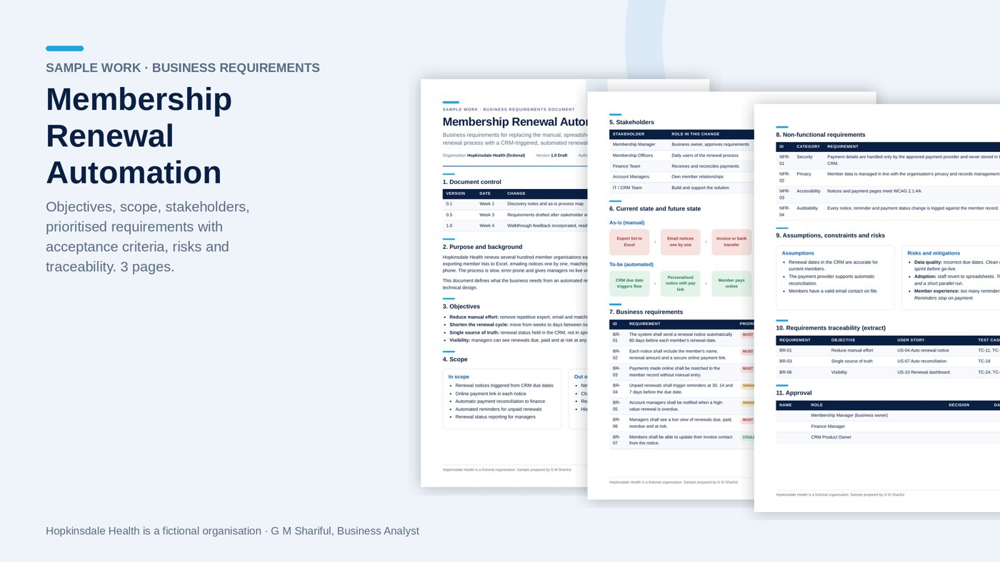
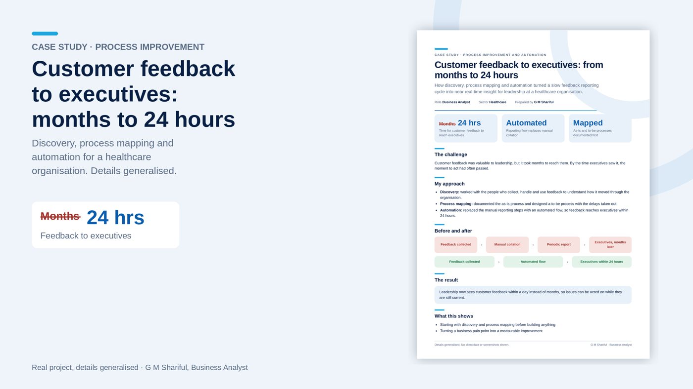

Business Analyst · Healthcare IT and Government Digital Transformation
I turn complex clinical and business needs into systems people trust. Below are sample pieces of work showing how I map processes, write requirements and design decision-support reporting.
Hopkinsdale Health is a fictional organisation. The case study is real work with details generalised.

KPIs, prior-year trends, a clickable world map, pipeline by stage and renewals at risk with a detail view. Filter by year, region, country and account manager.
Open dashboard →
Mapping a manual, spreadsheet-driven process, pinpointing pain points and designing an automated future state.
View PDF →
Objectives, scope, stakeholders, prioritised requirements with acceptance criteria, non-functional requirements, risks and traceability.
View PDF →
How discovery, process mapping and automation brought customer feedback to executives within a day.
View PDF →